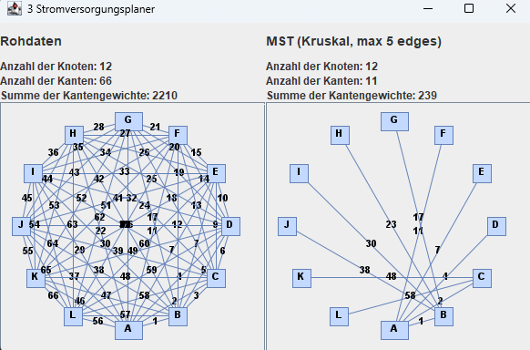

Problem 3 - "Stromversorgung"
Die Stadt floriert, alles wird moderner und so muss auch die Stromversorgung erneuert werden. Die Stadt hat bereits eruiert, wo Strommasten aufgestellt werden können. Sie haben auch festgestellt, dass es keine Barrieren in der Stadt gibt, d.h., prinzipiell könnten alle Strommasten miteinander verbunden werden. Aber natürlich wollen wir lange Leitungen möglichst vermeiden.
Deswegen schränken wir von vornherein ein, dass jeder Strommast nur mit maximal 5 nächsten Nachbarn verbunden werden darf. Es stellt sich heraus, dass dies immer noch zu teuer ist. Deswegen soll dieses Netz noch einmal so reduziert werden, dass zwar alle Strommasten miteinander verbunden sind, aber Kosten insgesamt minimal sind. Wir nehmen dabei an, dass die Kosten ausschließlich von der Leitungslänge abhängen.
Modellierung des Problems
Das Problem lässt sich als Graphenmodell mit ungerichteten Kanten darstellen. Jeder Strommast ist ein Knoten, die Verbindungen sind die Kanten. Die Kosten der Kanten sind die Länge der Stromleitungen.
Es wird eine Konfiguration an Leitungen zwischen den Strommasten gesucht, die eine minimale Gesamtlänge besitzt, und jeder Strommast mit maximal mit 5 weiteren Masten verbunden sein darf.
Um den Graph zu modellieren werden die Java-Bibliotheken JGraphT und JGraphX verwendet. Mit JGraphT wird der Graph als Datenstruktur modelliert. Mit JGraphX wird der Graph als Grafik dargestellt und auf dem Bildschirm dargestellt.
Die Eingabe
Die Eingabe besteht aus einem Graphen, der aus Kanten und Knoten besteht. Diese werden aus einer .txt Datei gelesen und in eine Instanz der Klasse AdjazenzMatrix.java geladen. Diese Instanz dient als Basis für die Berechnung des minimalen Spannbaums.
Der Eingabegraph besteht aus 12 Knoten und 66 Kanten. Die Kanten werden mit aufsteigenden Gewichten generiert. Die Knoten werden mit Buchstaben von A - L bezeichnet.
Zusätzlich ist im Code hinterlegt, dass die maximale Anzahl an Nachbarn pro Knoten 5 ist.
Die Ausgabe
Die Ausgabe wird als Graph in einem Fenster dargestellt und in die Datei 3 Stromversorgung.txt geschrieben. Das Fenster besteht aus zwei Hälften. Auf der linken Seite wird der Eingabegraph dargestellt. Auf der rechten Seite wird der berechnete Graph dargestellt.
Ein korrekte Ausgabe erfüllt folgende Eigenschaften:
-
Die Summe der Kantengewichte muss minimal sein.
-
Die Anzahl der Kanten darf maximal 5 sein.
-
Alle Knoten müssen über Kanten erreichbar sein.
-
Der Graph muss zusammenhängend und zyklusfrei sein.
-
Die Kanten müssen ungerichtet sein.
-
Alle Knoten des Eingabe-Graphen müssen im Ausgabe-Graphen enthalten sein.

Geeignete Algorithmen
Es gibt verschiedene Algorithmen, die verwendet werden können, um den minimalen Spannbaum eines ungerichteten Graphen zu berechnen. Einige dieser Algorithmen sind:
Kruskal-Algorithmus: Dieser Algorithmus sortiert alle Kanten des Graphen nach ihrem Gewicht und fügt sie dann eine nach der anderen dem minimalen Spannbaum hinzu, wobei sichergestellt wird, dass keine Schleife entsteht. Der Algorithmus endet, wenn alle Knoten des Graphen Teil des Spannbaums sind.
Prim-Algorithmus: Dieser Algorithmus beginnt mit einem beliebigen Knoten des Graphen und fügt nacheinander Kanten hinzu, die den aktuellen minimalen Spannbaum mit einem neuen Knoten verbinden. Der Algorithmus endet, wenn alle Knoten des Graphen Teil des Spannbaums sind.
Allerdings müssen diese Algorithmen modifiziert werden, da die maximale Anzahl an Nachbarn pro Knoten maximal 5 betragen darf.
Die Laufzeit des Algorithmus
Die Funktion getEdges() hat eine Laufzeit von O(V^2), da sie jedes Element der Adjazenzmatrix durchläuft.
Die Funktionen getSourceVertexFromEdge() und getTargetVertexFromEdge() haben beide eine Laufzeit von O(V), da sie durch die Liste der Vertices iterieren und den gesuchten Vertex suchen.
Die Funktion getAdjacentEdges() hat eine Laufzeit von O(E), da sie durch die Liste der Edges iteriert und jede Kante überprüft, ob sie den angegebenen Vertex enthält.
Die Hauptschleife in kruskal() wird so lange ausgeführt, wie es noch Kanten in forest_edges gibt, wodurch sie eine Laufzeit von O(E) hat.
Innerhalb dieser Schleife werden in einem For-Loop die Funktionen getSourceVertexFromEdge() und getTargetVertexFromEdge() aufgerufen, die jeweils eine Laufzeit von O(V) haben.
In der Hauptschleife wird zusätzlich die Funktion getAdjacentEdges() aufgerufen, die eine Laufzeit von O(E) hat und ein weiterer For-Loop mit der Laufzeit O(V).
Daraus resultiert eine Laufzeit von O(V^2 + E * ( V^3 + E )). Dies kann auf O(V^3 * E) vereinfacht werden.
Die Implementierung des Algorithmus
Zur Lösung dieses Problems wurde der Algorithmus von Kruskal verwendet. Der Algorithmus ist ein Greedy-Algorithmus. Er berechnet den minimalen Spannbaum eines Graphen.
Zuerst wird eine Liste aller Kanten des Graphen erstellt. Diese Liste wird nach Gewicht sortiert. Dann wird ein Wald aus Bäumen erstellt, wobei jeder Knoten ein eigener Baum ist. Dann wird die Liste der Kanten durchlaufen.
Wenn die Kanten zwei Knoten aus verschiedenen Bäumen verbindet, wird die Kante dem minimalen Spannbaum hinzugefügt. Die Bäume werden dann zusammengeführt.
Die Funktion gibt eine Adjazenmatrix zurück, die aus der Liste der Ausgabe-Kanten erstellt wird.